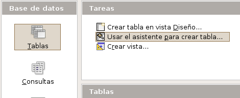
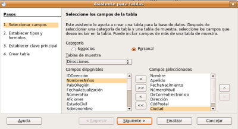
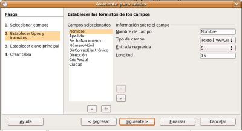
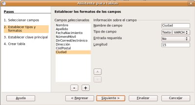
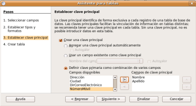
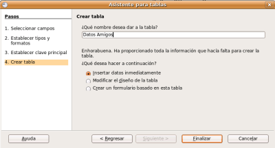

El Asistente para tablas de OpenOffice Base incluye multitud de tablas prediseñadas que podemos configurar y utilizar en tan sólo unos minutos. A continuación vamos a crear la tabla amigos utilizando el asistente para tablas.
Para ello debemos seguir los pasos indicados en las siguientes figuras:
1. Pulsamos en el botón "Usar el asistente para crear tabla..."

2.Seleccionamos la categoría Personal y la tabla de muestra Direcciones.

3. Elegimos los campos que queremos y cambiamos las propiedades de los tipos de datos.

4. Idem que el anterior . . .

5. Elegimos crear una clave principal como combinación de los campos Nombre y Apellidos.

6. Introducimos el nombre de la tabla.
